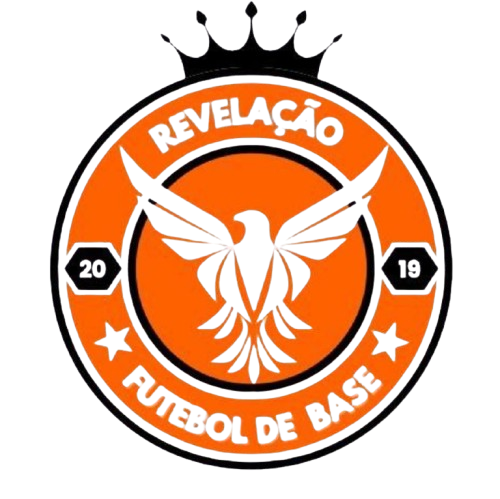

Autobiografia
ㅤㅤMeu nome é Guilherme Mourato Ramalho, tenho atualmente 15 anos, moro em Salto sp e estudo no instituto federal de São Paulo.
ㅤㅤBom, minha infância foi muito divertida, pelo que eu me lembre, quando eu tinha em torno de 2 a 3 anos fui para a paraíba visitar meus tios e
tias foi algo novo para mim e foi divertido conhecer novos lugares,
fui em lagos, riachos, cachoeiras e conheci uns parentes de lá, também lembro de quando eu tinha 5 a 6 anos eu fui batizar na igreja Cristo rei aqui em Salto,
estava muito ansioso e com um pouco de vergonha já que ia demorar um pouco para chamar meu nome, mas quando eu fui chamado fiquei mais suave e chorei quando fui batizado
não sei o por que mas acontece né.
ﾠﾠDando um salto temporal até meus, 12 aos dias atuais, no início do ano de 2021 eu estava muito gordo com colesterol de um idoso e estava quase virando sedentário aí
comecei a treinar em casa para perder um pouco de peso, mas peguei gosto pela coisa que hoje em dia vou na academia 5 vezes por semana pra manter o shape né e hoje
estou em um time de base chamado: Revelação. Já começou o campeonato e já estreei como titular, graças a Deus.
Carreira
ㅤㅤBom, eu tento ser jogador já faz bastante tempo uns 10 ou 9 anos, ao todo, em meus 15 anos de vida, fiz juntando tudo 17 peneiras, passei em 12, mas eu
fiquei por mais tempo em duas: no Salto fotebol clube, no
Revelação, e no Primavera.
ㅤㅤSalto -> Minha passagem lá foi muito boa, pois apendi de mais lá, muitas táticas novas e estratégias que eu não conhecia e achei a posição em que devo atuar,
sem contar que é muito bom jogar com quem é um pouco pior que você, já que para ser melhor que eu, só tem os profissonais.
ㅤㅤRevelação -> Estou neste "time" atualmente, como já falei, estou jogando um campeonato e meu time está muito forte, estou jogando na lateral esquerda, e estou
jogando melhor a cada treino e a cada jogo, conseguimos ganhar dois jogos já, um de 2x0 e outro de 7x0, se ganharmos mais 1 jogo estamos praticamente qualificados
para as quartas de final.
